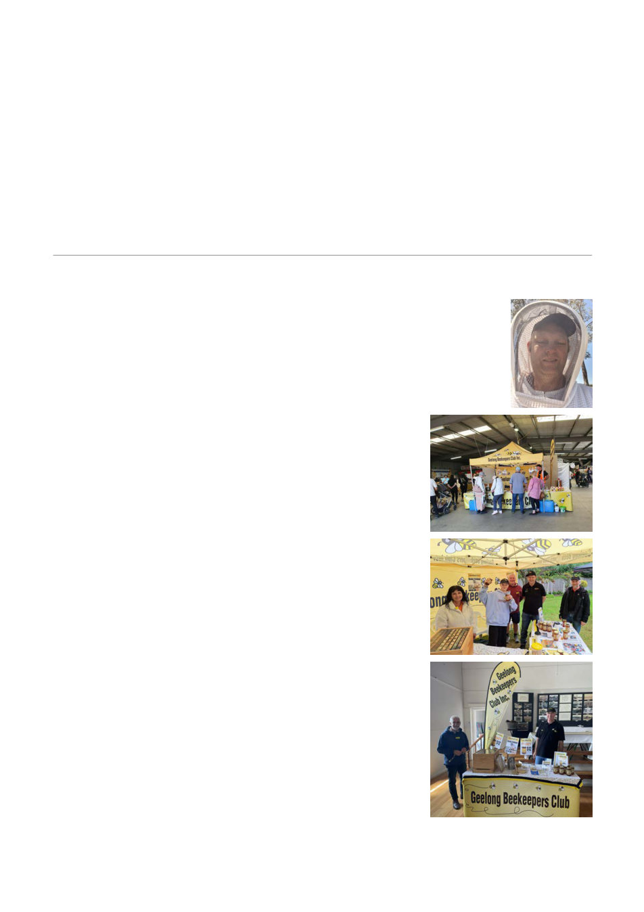

Please note that nominees must be over 18 and financial members of the club. The committee
meets on the first Thursday of each month from 7 PM to 9 PM.
If you’re interested in volunteering or would simply like to understand what’s involved, please speak
with any current committee member, who are more than happy to walk you through the roles so
you can make an informed decision.
The club holds Association Liability Coverage, which includes elements of professional indemnity
and management liability. This protects the organisation, office bearers, and volunteers against
legal costs and damages that may arise from allegations of misconduct, breach of duty,
mismanagement and similar matters.
Community clubs only thrive when people step up. No committee means no club.
Nathan Whitford, President, Geelong Beekeepers Club
Annual Report of Club Activities 2025/26
Dear Members,
Reflecting on the past year, it is remarkable to see just how much our club has
achieved. It has been a year defined by growth, learning, community engagement
and preparation. Beekeeping is never predictable, yet one constant has stood out:
the willingness of our members to contribute their time, knowledge and
enthusiasm to strengthen this club.
As expected, the spread of Varroa mite continues to be the most
significant challenge facing Australian beekeeping. Throughout the
year, our club placed strong emphasis on education and
preparedness. We hosted presentations, discussions and practical
demonstrations to help members understand what lies ahead and
how best to manage it. A major highlight was successfully
advocating for a second National Varroa Management Training
course to be held in Geelong in July 2025. Despite competing with
a Geelong Football Club home game, around 70 people attended.
The turnout reinforced how important this issue is to local
beekeepers and demonstrated the appetite for practical,
evidence‑based training in our region.
I remain deeply impressed by the work of our Varroa
Sub‑Committee. Bruce Ward, John Bemelmans, Jurg Schutz, Sue
Moritz, Susan and Stephen Fridey, Stephen Davey, Ian Ashman,
Stan and Deborah Filippis, John Edmonds and Helmut Woerner
have devoted countless hours to preparing our members for the
challenges ahead. Their ongoing development of practical Varroa
management modules will be invaluable for years to come.
Education continued to be one of the club’s greatest strengths in
additional to hive openings, practical demonstrations and monthly
biosecurity sessions.We delivered four Beekeeping Essentials
Courses across the past year August and October 2025, followed
by February and March 2026, each one fully booked and supported
by a dedicated team of volunteers.
Our guest speakers brought a wide range of knowledge and perspectives: